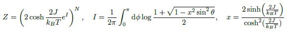

Modèle d’Ising¶
Un système magnétique peut-être décrit de façon simple avec l’Hamiltonien suivant (modèle d’Heisenberg):
Dans cet exercice, nous allons nous intéresser à un modèle encore plus simple: celui d’un ensemble de spin 1/2 et ne considérer que l’intéraction entre les spins voisins les plus proches. En écrivant \(\vec{s}_i = \frac{\hbar}{2}S_i\) (\(S_i=\pm1\)), on obtient le modèle d’Ising décrit par l’Hamiltonien:
où la notation \(\langle i,j\rangle\) denote la somme sur les paires des plus proches voisins.
Nous allons dans cet exercice simuler ce système à l’aide d’un algorithme appelé “Metrolopolis”. Celui-ci est détaillé sur la page wikipedia dédié au model d’Ising. https://en.wikipedia.org/wiki/Ising_model . Nous prendrons un champ magnétique nul.
L’état du système sera représenté par un tableau de taille \(N\times N\). Nous utiliserons des conditions périodiques (i.e. le spin à la position \((N-1, j)\) est couplé au spin à la position \((0, j)\), etc.
Écrire une fonction
energy(state)qui retourne l’énergie totale du système magnétique dans l’état ‘state’.Écrire une fonction
delta_energy(state, i, j)qui retourne la difference d’énergie induite par le flipping du spin de coordonnees(i, j). Nous rappellons que seule l’intéraction entre plus proches voisins est considérée.Écrire une fonction
metropolis(state, beta, M)qui retourne l’état du système magnétique après avoir implémenté M fois l’algorithme de Metrolopolis. Une réalisation de l’algorithme correspond à choisir un point de manière aléatoire, à calculer la différence d’énergie induite par le flip de celui-ci. Si cette énergie est négative, alors on considère que le spin flip. Si la différence d’énergie est positive, on autorise le spin flip selon la probabilité: \(e^{-\beta \Delta E}\).Afficher l’image pour \(\beta=1\), après 1000, 1 000 000, 100 000 000 itérations. Vous pouvez aussi faire une animation. On prendra comme état initial, 300x300 spins de valeur aléatoire \(\pm 1\). Il faudra utiliser numba.
Nous allons regarder l’énergie moyenne du système. Modifier votre fonction metropolis, de façon à pouvoir enregistrer l’énergie moyenne du système pendant l’évolution. Pour éviter des problèmes de mémoires, nous vous conseillons de l’enregistrer uniquement tous les \(N^2\) réalisations.
Tracer l’énergie du système au cours du temps. Observer le temps de convergence du système (on prendra \(\beta=1\), \(\beta=0.2\) et \(\beta=0.1\)). En plus de la convergence, qu’observez-vous pour \(\beta=0.2\) ?
Tracer l’énergie moyenne en fonction de \(\beta\). Vous pourrez aussi accélérer votre calcul en l’évaluant sur plusieurs noyaux de votre ordinateur, à l’aide du décorateur:
@jit(parallel=True)et de la bouclefor beta in numba.prange(xxx):.De même, tracer les fluctuations d’énergie en fonction \(\beta\)
Comme vous l’avez vu en cours de Physique Statistique, il existe une solution analytique au modèle d’Ising en deux dimensions:

Comment calculer l’énergie moyenne du système à partir de la fonction de partition \(Z\) ? Evaluez numériquement cette expression et comparez à votre simulation metrolopolis.
Si vous avez le temps, même question pour les fluctuations d’énergie
La transition de phase a lieu pour \(T\) qui vérifie:
Résolvez cette equation numériquement (on pourra utiliser la fonction root de scipy) et comparez aux résultats de la question précédente.
On observe des fluctuations importantes pour la courbe \(\beta=0.2\)
L’énergie moyenne est donnée par :
Les fluctuations d’énergie par la dérivée seconde.